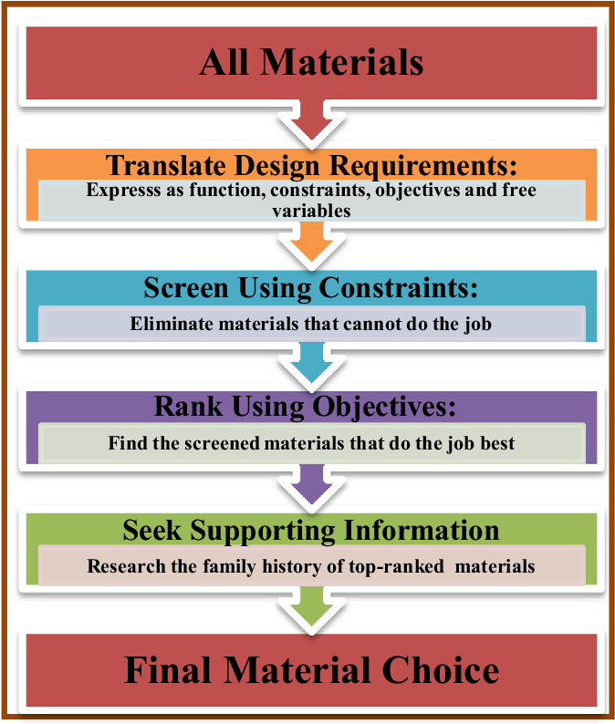

Selecting the most suitable material for a specific engineering application is a primary responsibility of an engineer. Because the "kingdom" of materials is so vast, engineers follow a systematic, four-step process to find the best match between the property-profiles of available materials and the requirements of the design[cite: 14].

Step 1: Translation
The first step is translating the design requirements into a clear statement composed of four specific elements[cite: 14]:
- Function: What exactly does the component do?
- Constraints: What non-negotiable conditions must be met? (e.g., Must meet a specific target value of stiffness, strength, electrical resistivity, or cost limit).
- Objective: What metric is to be maximized or minimized? (e.g., Minimize mass, minimize volume, or maximize energy storage).
- Free Variables: What parameters of the problem is the designer free to change? (e.g., Thickness, shape, or exact material choice).
Step 2: Screening
Screening involves completely eliminating materials that simply cannot do the job. This elimination is based strictly on the Constraints defined in the Translation phase. For example, if a constraint dictates that electrical resistivity must be greater than a certain value, all materials below that value are immediately screened out[cite: 14].
Step 3: Ranking
Ranking involves taking the surviving (screened) materials and sorting them to find the ones that do the job best. This is based entirely on the Objective. The specific property (or group of properties) that maximizes performance for the given design is called the Material Index (M). If the objective is to maximize thermal conductivity (λ), then M = λ[cite: 14].
Step 4: Seeking Supporting Information
The final step involves researching the "family history" of the top-ranked candidates. This means checking data-sheets for practical realities like ease of fabrication, exact cost, local availability, and environmental impact before making the final choice[cite: 14].
Practice Exercises
Test your knowledge on the Selection Process.
1. Which step of the selection process involves completely eliminating materials that cannot meet non-negotiable conditions?
A) Translation
B) Screening
C) Ranking
2. During the "Translation" step, what are "Free Variables"?
A) Parameters of the problem that the designer is free to change (like shape or thickness)
B) The conditions that must not be broken under any circumstance
C) The metrics that must be explicitly maximized or minimized
3. The "Ranking" step sorts the surviving materials based on what specific design requirement?
A) Constraints
B) Free Variables
C) Objective
4. What is the "Material Index" (M)?
A) The atomic weight of the final material chosen
B) The specific property or group of properties that maximizes performance for the design
C) A catalog number used to order materials from a supplier
5. What does an engineer do during the "Seeking Supporting Information" phase?
A) Researches the top-ranked candidates for practical issues like cost, availability, and ease of fabrication
B) Defines the core mechanical function of the component
C) Randomly selects a material from the un-screened list